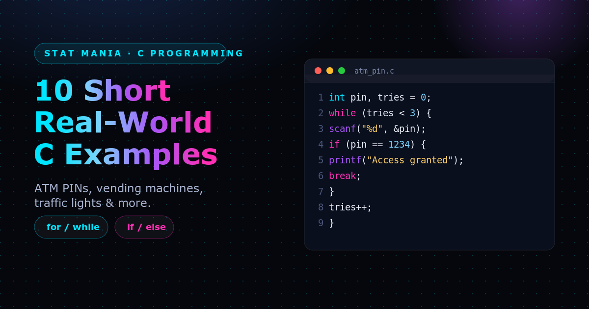

if and loops are the two building blocks behind almost every embedded and systems program you’ll ever write in C: something happens repeatedly, and on each repetition you decide what to do. Here are 10 short, real-world examples — each with the problem it models and a quick walkthrough of the code.
1. ATM PIN Verification — Retry Up to 3 Times
The problem: An ATM shouldn’t let someone guess a PIN forever. Give the user 3 attempts, then stop.
int pin, tries = 0;
while (tries < 3) {
scanf("%d", &pin);
if (pin == 1234) { printf("Access granted"); break; }
tries++;
}How it works: The while (tries < 3) loop caps the attempts. Each pass reads a PIN and checks it with if; a correct guess prints a message and breaks out immediately. A wrong guess falls through to tries++, and the loop simply ends on its own once tries hits 3 — there’s no explicit “access denied” branch needed.
2. Temperature Control — Check Multiple Sensors
The problem: A server room or greenhouse has several temperature sensors, and any sensor reading too hot should switch on its own fan.
for (int i = 0; i < 5; i++) {
int temp = read_sensor(i);
if (temp > 30) fan_on(i);
}How it works: The for loop visits sensors 0 through 4 one at a time. read_sensor(i) fetches that sensor’s reading, and the if decides — independently for each sensor — whether to call fan_on(i). Nothing here depends on the other sensors, so a simple sequential scan is enough.
3. Password Retry — Keep Asking Until Correct
The problem: A login prompt that won’t move on until the user types the right password — no attempt limit, just “try again.”
char pass[20];
do {
scanf("%s", pass);
if (strcmp(pass, "secret") == 0) break;
} while (1);How it works: do...while (1) is a loop that always runs its body at least once and would otherwise repeat forever — the only way out is the break inside the if. strcmp returns 0 when two C strings are identical, so strcmp(pass, "secret") == 0 is how C spells “the passwords match.”
4. Traffic Light Timer — Switch When Time Expires
The problem: A traffic light needs to stay green until its timer runs out, then switch to yellow — checked continuously, forever.
for (;;) {
green_on();
if (timer_expired()) { green_off(); yellow_on(); }
}How it works: for (;;) is C’s idiom for an infinite loop (all three parts of the for are left blank). Each pass keeps the green light on and asks timer_expired() whether it’s time to move on; when it is, the if body turns green off and yellow on. A real controller would extend this with more states (yellow → red → green), but the pattern — infinite loop, if to notice a change — stays the same.
5. Vending Machine Change — Dispense Quarters
The problem: A vending machine owes a customer change and needs to dispense it as physical quarters, one at a time, until the amount owed drops below a quarter’s value.
while (change >= 25) {
if (change >= 25) { dispense_quarter(); change -= 25; }
}How it works: The loop condition and the if condition are the same test (change >= 25) — while that’s redundant here (a plain while without the inner if would do the same job), it’s a common defensive habit once the loop body grows and other conditions get added. Each pass dispenses one quarter and subtracts 25 (cents) from change, until there isn’t enough left for another quarter.
6. Student Grade Calculator — Count Passes
The problem: Given a class of n students’ marks, count how many passed (scored 40 or above).
int pass = 0;
for (int i = 0; i < n; i++) {
if (marks[i] >= 40) pass++;
}How it works: This is the classic filter-and-count pattern: loop over every element of an array (marks[i] for i from 0 to n - 1), test each one with if, and increment a counter (pass) when it qualifies. The same shape works for counting anything — failing grades, over-budget items, expired records — just by changing the condition.
7. LED Blink Pattern — Read Bits of a Pattern
The problem: A hardware pattern like 0b10110010 should blink an LED on and off to match each bit, one bit at a time.
for (int i = 0; i < 8; i++) {
if (pattern & (1 << i)) led_on();
else led_off();
delay(200);
}How it works: 1 << i shifts the value 1 left by i bits, producing a mask with only bit i set (00000001, 00000010, 00000100, …). pattern & (1 << i) keeps just that one bit from pattern; the result is non-zero (truthy) only if bit i was 1. So the loop walks through all 8 bits of pattern, turning the LED on or off to match each one, with a delay(200) (milliseconds) so the blinking is visible.
8. Digital Clock — Roll Over Seconds to Minutes
The problem: A clock needs to tick once a second and carry seconds into minutes once they reach 60 — the same “carrying” logic behind every digital clock display.
while (1) {
delay(1000);
sec++;
if (sec == 60) { sec = 0; min++; }
}How it works: while (1) ticks forever. Each iteration waits one second (delay(1000) milliseconds), then increments sec. The if catches the moment sec reaches 60 and resets it to 0 while bumping min — the same rollover a real clock would also need to apply to min rolling into hour.
10. Bank Withdrawal — Check Balance Before Deducting
The problem: A withdrawal should only go through if there’s enough balance to cover it — otherwise, reject it and let the user try again.
while (1) {
scanf("%f", &amount);
if (amount <= balance) balance -= amount;
else printf("Insufficient funds");
}How it works: Each pass through the infinite loop reads a requested amount. The if/else is the guard: if amount fits within balance, it’s deducted; otherwise the request is rejected with a message and balance is left untouched. Note there’s no way to leave this loop — a real version would add a “cancel” choice the same way Example 9 handles choice == 0.
These are simplified sketches, not production code — there’s no input validation, and several of them (4, 8, 10) loop forever by design, the way an embedded device’s main loop or a always-on hardware controller would. But the underlying shape repeats everywhere in C: a loop for repetition, an if for decision-making. Once that pattern is second nature, most short C programs are just variations on it.